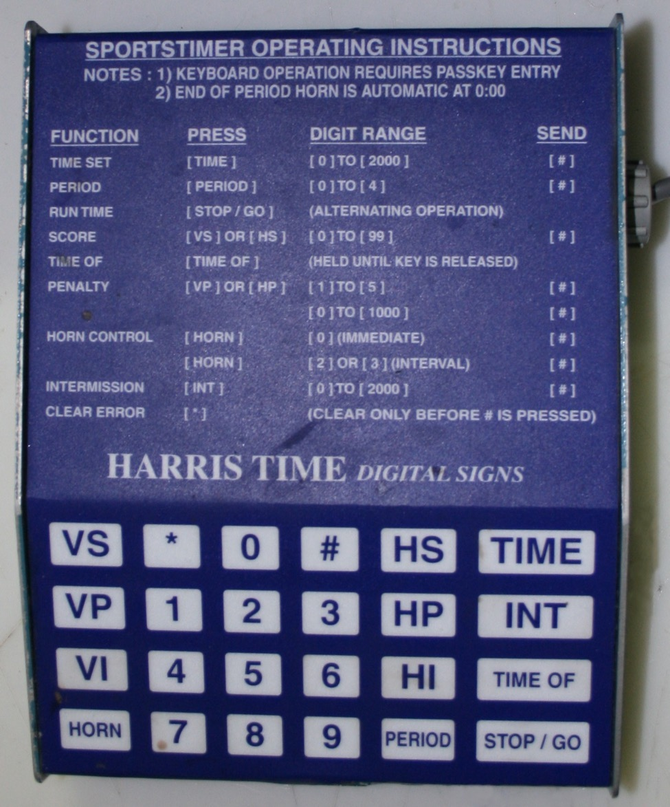

LEARN YOUR RINK'S CONTROLLER
Harris Time Sportstimer
Blue panel · HP / VP penalty slots · # sends an entry.
Physical key positions preserved · swipe the console sideways on a phone
Controller photo & manual · Harris Time Sportstimer

Training configuration & limits
Photographed Cambridge Sportstimer variant; unlocked at the start of practice. TIME and INT accept up to 20:00; periods 0–4; penalties up to five slots per side. Practice scoreboard displays two active slots and queues the rest. Slot labels stand in for player numbers because this panel enters a slot, not a jersey. Manual horn uses HORN 0 #; 2/3-minute horn must be configured each period. Exact Type 1 versus Type 2 mapping is unverified. HI indicator programming, passkey and physical unlock behavior are omitted.
Documented Canadian use: Cambridge, Ontario: Dickson, Duncan McIntosh, Hespeler and Preston (2016 guide). Rink evidence ↗